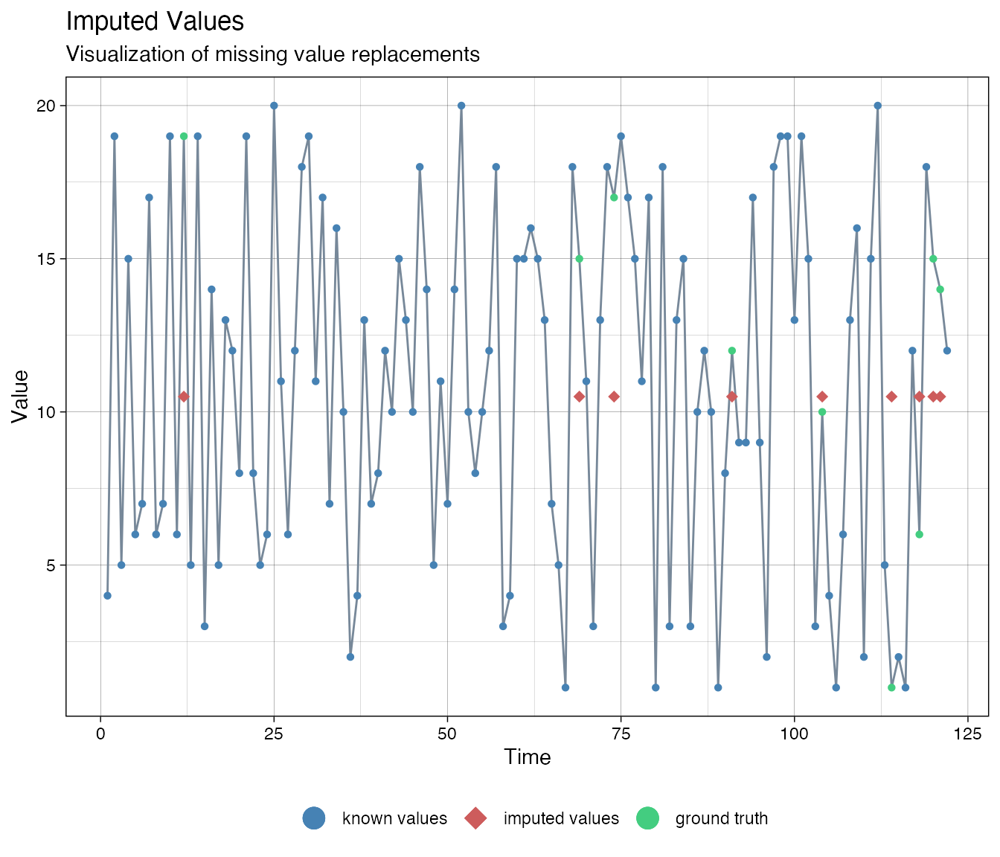
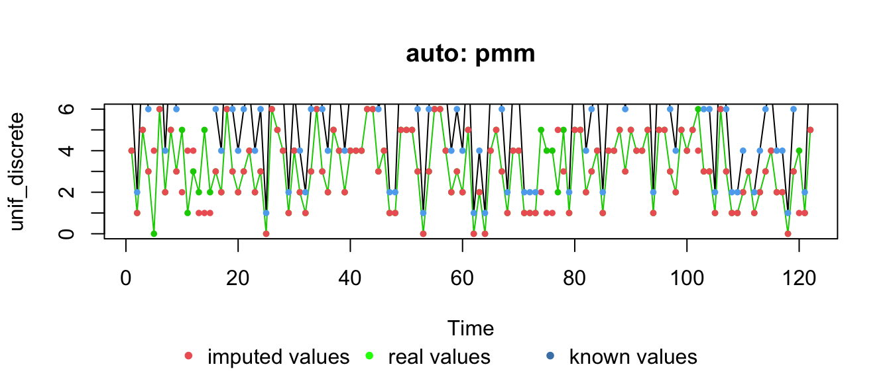
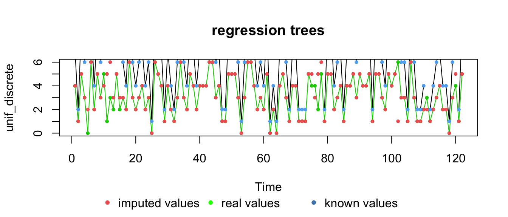
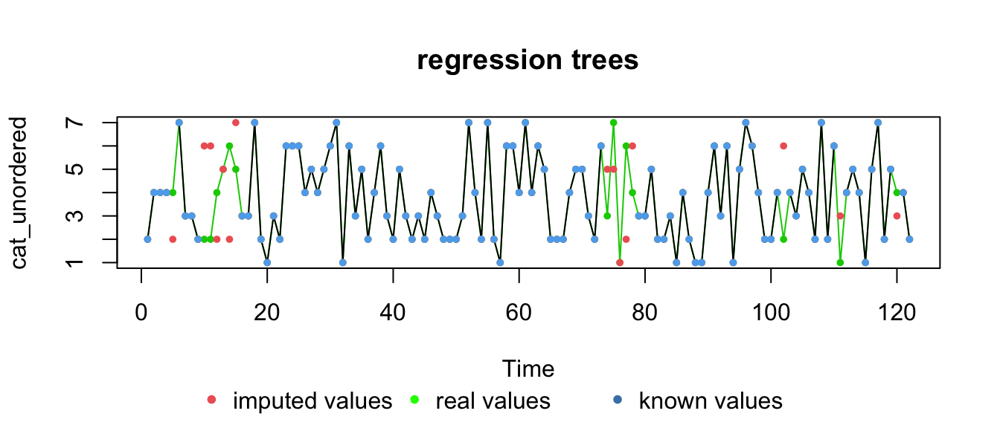
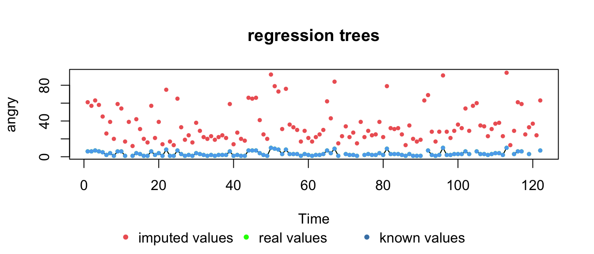
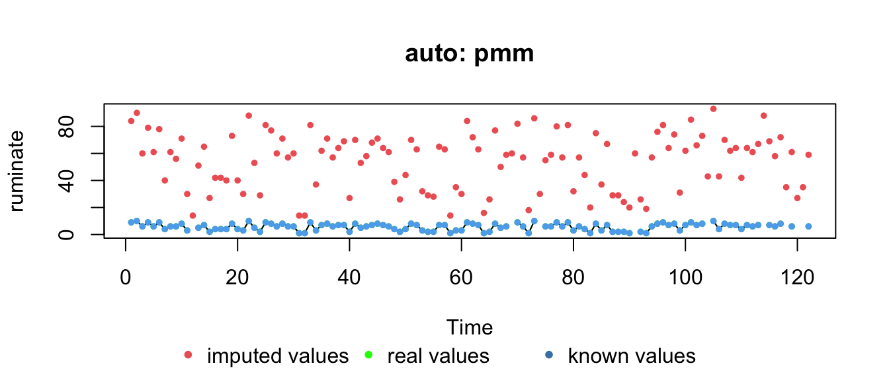
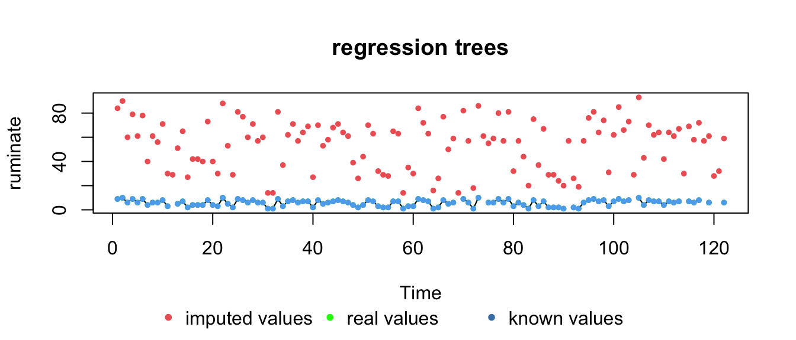
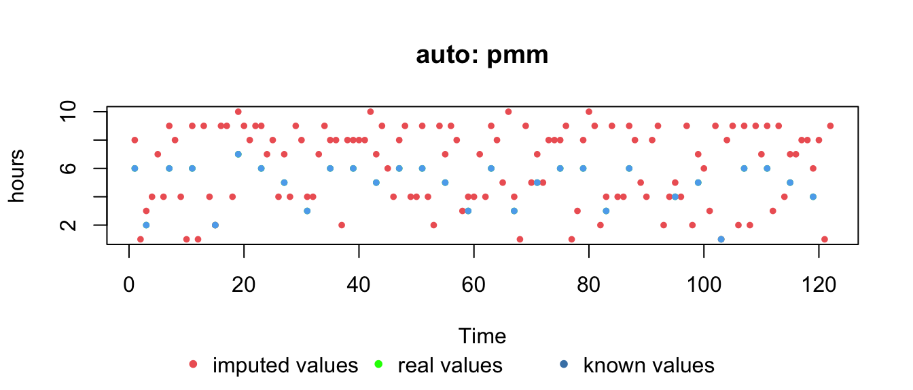
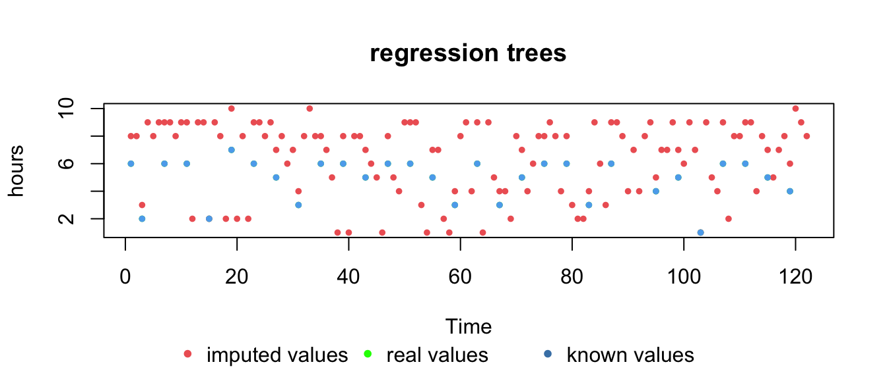

vignettes/imputemissingsata.Rmd
imputemissingsata.RmdApproaches, methods and best practices for dealing with missing data are diverse, both in number and in their effect on the results of analyses. Therefore, the first rule of dealing with missing data is: Always report analysis results for the imputed data as well as the data with missing values removed!
The CRAN taskview on missing data is a good starting point for finding what you may need. In this vignette we will specifically discuss package imputeTS for Time Series Missing Value Imputation and mice Multivariate Imputation by Chained Equations.
We’ll create some variables from which we artifically remove datapoints. This allows us to evaluate how well the imputation methods perform in recovering the true values.
set.seed(54321)
# Random normally distributed numbers
zscore <- rnorm(n = 122)
df_vars <- data.frame(zscore = zscore)
# Random discrete uniform numbers
df_vars$unif_discrete <- unif_discrete <- round(runif(NROW(df_vars),min = 0,max = 6))
df_vars$unif_discrete[c(5,10:15,74:78,102,111,120)] <- NA
# Unordered catagorical
df_vars$cat_unordered <- cat_unordered <- factor(round(runif(NROW(df_vars),min = 1,max = 7)))
df_vars$cat_unordered[c(5,10:15,74:78,102,111,120)] <- NA
# Ordered categroical
df_vars$cat_ordered <- cat_ordered <- ordered(round(runif(NROW(df_vars),min = 1,max = 20)))We’ll also load the data analysed by Bastiaansen et al. (2019) and select some variables which have missing values.
# # Load data from OSF https://osf.io/tcnpd/
# require(osfr)
# manyAnalystsESM <- rio::import(osfr::osf_download(osfr::osf_retrieve_file("tcnpd") , overwrite = TRUE)$local_path)
# Or use the internal data
data(manyAnalystsESM)
# We want to use these variables
# Note: the infix function '%ci%' is from package 'invctr'
vars <- c("angry"%ci%manyAnalystsESM,"ruminate"%ci%manyAnalystsESM,"hours"%ci%manyAnalystsESM)
df_vars <- cbind(df_vars,manyAnalystsESM[,vars])
# Give zscore and ordered categorical gthe same NAs as variable 'angry'
df_vars$zscore[is.na(df_vars$angry)] <- NA
df_vars$cat_ordered[is.na(df_vars$angry)] <- NAFunction imputeTS::statsNA() can produce some helpful statistics on the NAs that might be present in your data.
> [1] "Length of time series:"
> [1] 122
> [1] "-------------------------"
> [1] "Number of Missing Values:"
> [1] 9
> [1] "-------------------------"
> [1] "Percentage of Missing Values:"
> [1] "7.38%"
> [1] "-------------------------"
> [1] "Stats for Bins"
> [1] " Bin 1 (31 values from 1 to 31) : 1 NAs (3.23%)"
> [1] " Bin 2 (31 values from 32 to 62) : 0 NAs (0%)"
> [1] " Bin 3 (31 values from 63 to 93) : 3 NAs (9.68%)"
> [1] " Bin 4 (29 values from 94 to 122) : 5 NAs (17.2%)"
> [1] "-------------------------"
> [1] "Longest NA gap (series of consecutive NAs)"
> [1] "2 in a row"
> [1] "-------------------------"
> [1] "Most frequent gap size (series of consecutive NA series)"
> [1] "1 NA in a row (occuring 7 times)"
> [1] "-------------------------"
> [1] "Gap size accounting for most NAs"
> [1] "1 NA in a row (occuring 7 times, making up for overall 7 NAs)"
> [1] "-------------------------"
> [1] "Overview NA series"
> [1] " 1 NA in a row: 7 times"
> [1] " 2 NA in a row: 1 times"> [1] "Length of time series:"
> [1] 122
> [1] "-------------------------"
> [1] "Number of Missing Values:"
> [1] 15
> [1] "-------------------------"
> [1] "Percentage of Missing Values:"
> [1] "12.3%"
> [1] "-------------------------"
> [1] "Stats for Bins"
> [1] " Bin 1 (31 values from 1 to 31) : 7 NAs (22.6%)"
> [1] " Bin 2 (31 values from 32 to 62) : 0 NAs (0%)"
> [1] " Bin 3 (31 values from 63 to 93) : 5 NAs (16.1%)"
> [1] " Bin 4 (29 values from 94 to 122) : 3 NAs (10.3%)"
> [1] "-------------------------"
> [1] "Longest NA gap (series of consecutive NAs)"
> [1] "6 in a row"
> [1] "-------------------------"
> [1] "Most frequent gap size (series of consecutive NA series)"
> [1] "1 NA in a row (occuring 4 times)"
> [1] "-------------------------"
> [1] "Gap size accounting for most NAs"
> [1] "6 NA in a row (occuring 1 times, making up for overall 6 NAs)"
> [1] "-------------------------"
> [1] "Overview NA series"
> [1] " 1 NA in a row: 4 times"
> [1] " 5 NA in a row: 1 times"
> [1] " 6 NA in a row: 1 times"In addition to useful summary and visualisation tools, package imputeTS contains a number of imputation methods that are commonly used. If you have installed the package, run vignette("imputeTS-Time-Series-Missing-Value-Imputation-in-R", package = "imputeTS") from the console ans learn about all the options.
One of the most straightforward inputation methods is linear interpolation. This is a relatively sensible method if there is just one time point missing. However, when several values are missing in a row, the linear interpolation might be unrealistic. Other methods that will give less plausible results for imputation of multiple missing values in a row are last observation carried forward and next observation carried backward, also available in imputeTS as na.locf(type = "locf"), and na.locf(type = "nocb") respectively.
We’ll generate a data set with linear interpolation (also available are spline and stine interpolation), to compare to the more advanced multiple imputation methods discussed below.
out.linear <- t(laply(1:NCOL(df_vars), function(c){
y <- as.numeric(as.numeric_discrete(x = df_vars[,c], keepNA = TRUE))
idNA <- is.na(y)
yy <- cbind(imputeTS::na.interpolation(y,option = "linear"))
if(all(is.wholenumber(y[!idNA]))){
return(round(yy))
} else {
return(yy)
}
}))
colnames(out.linear) <- colnames(df_vars)Note that we need to round the imputed values to get discrete values if the original variable was discrete.
Imputation by using the Kalman filter is a powerful method for imputing data. However, when dealing with discrete data, one has to take some additional steps in order to get meaningful results.
For example, with uniform discrete numbers and/or scales that are bounded (eg. visual analog scale from 0-100), the Kalman method will not correctly impute the data and might go outsdide the bounds of the scale.
# Use casnet::as.numeric_discrete() to turn a factor or charcter vector into a named numeric vector.
ca <- as.numeric_discrete(df_vars$cat_ordered, keepNA = TRUE)
imputations <- imputeTS::na.kalman(ca, model = "auto.arima")
imputeTS::plotNA.imputations(x.withNA = ca, x.withTruth = as.numeric_discrete(cat_ordered), x.withImputations = imputations)There is a way to adjust the imputation procedure by transforming the data (thanks to Steffen Moritz, author of imputeTS, for suggesting this method). The ordered categorical series was created with bounds 1 and 20.
# Bounds
lo <- 1
hi <- 20
# Transform data, take care of dividsion by 0
ca_t <- log(((ca-lo)+.Machine$double.eps)/((hi-ca)+.Machine$double.eps))
imputations <- imputeTS::na.kalman(ca_t, model = "auto.arima")
# Plot the result
# Back-transform the imputed forecasts
imputationsBack <- (hi-lo)*exp(imputations)/(1+exp(imputations)) + lo
imputeTS::plotNA.imputations(x.withNA = ca, x.withTruth = as.numeric_discrete(cat_ordered), x.withImputations = imputationsBack)
Package mice implements a method called: Multivariate Imputation by Chained Equations. The main function mice() will try to select an appropriate method based on the type of variable (discrete, continuous, etc.). In general, the advantage of using mice() with discrete data is that it has a number of methods that will actually return disctrete values.
Check the manual page for mice (e.g. type ?mice in the console), to see the 25 methods that are available. On that manual page you can also find links to a number of vignettes that provide a very thorough explanation of all the functions the package has to offer.
In this vignette, we will focus on a simple demonstration of just a few of the methods in mice().
We can just provide the mice() function our data set and it will take care of analysing the variables and selecting an appropriate imputation method.
The algorithm chooses methods pmm, polyreg and polr:
> zscore unif_discrete cat_unordered cat_ordered angry
> "pmm" "pmm" "polyreg" "polr" "pmm"
> ruminate hours
> "pmm" "pmm"By default mice() will generate 5 iterations of each time series, that is, argument maxit = 5. If you inspect the imp.mice object you can see it is a list with several fields, the field imp is another list with fields named after the columns in our data set. Each field contains 5 iterations for the variable.
> zscore unif_discrete cat_unordered cat_ordered angry
> 5 5 5 5 5
> ruminate hours
> 5 5To generate replacements for the missing values from those 5 iterations we need to call the function complete().
Check the complete() manual entry for some other interesting options.
We can check “truth” values for the variables we created, which obviously cannot be done for the empirical data.
Function imputeTS::plotNA.imputations() is an excellent way to visualise the imputation result.
truth <- list(zscore, unif_discrete, cat_unordered, cat_ordered, df_vars$angry, df_vars$ruminate, df_vars$hours)
for(c in 1:NCOL(df_vars)){
print(colnames(df_vars)[c])
withNA <- as.numeric_discrete(df_vars[,c], keepNA = TRUE)
Truth <- as.numeric_discrete(truth[[c]], keepNA = TRUE)
plotNA.imputations(x.withNA = withNA,
x.withImputations = out.linear[,c],
x.withTruth = Truth,
main = "linear interpolation",
ylab = colnames(df_vars)[c])
plotNA.imputations(x.withNA = withNA,
x.withImputations = as.numeric_discrete(out.auto[,c]),
x.withTruth = Truth,
main = paste("auto:",imp.mice$method)[c],
ylab = colnames(df_vars)[c])
plotNA.imputations(x.withNA = withNA,
x.withImputations = as.numeric_discrete(out.cart[,c]),
x.withTruth =Truth,
main="regression trees",
ylab = colnames(df_vars)[c])
}> [1] "zscore"> [1] "unif_discrete"
> [1] "cat_unordered"
> [1] "cat_ordered"> [1] "angry"
> [1] "ruminate"
> [1] "hours"
Finally, we compare the effect of different methods on the results of analyses.
for(c in 1:NCOL(df_vars)){
print(colnames(df_vars)[c])
withNA <- as.numeric_discrete(df_vars[,c], keepNA = FALSE)
Truth <- as.numeric_discrete(truth[[c]], keepNA = FALSE)
LINEAR <- as.numeric_discrete(unname(out.linear[,c]))
AUTO <- as.numeric_discrete(out.auto[,c])
CART <- as.numeric_discrete(out.cart[,c])
df <- data.frame(NAremoved = c(mean(withNA, na.rm = TRUE), sd(withNA)),
N
knitr::kable(x = ))
}Bastiaansen, J. A., Kunkels, Y. K., Blaauw, F., Boker, S. M., Ceulemans, E., Chen, M., … Bringmann, L. F. (2019, March 21). Time to get personal? The impact of researchers’ choices on the selection of treatment targets using the experience sampling methodology. https://doi.org/10.31234/osf.io/c8vp7